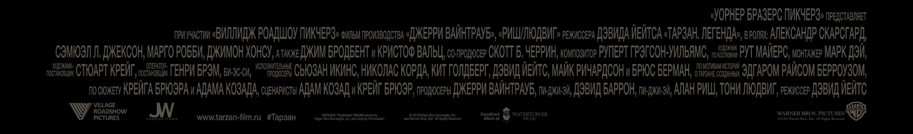

Тарзан легенда. Он необычный человек
В кино с 30 июня
Купить билет Смотреть трейлер
© 2016 WARNER BROS. ENT. ALL RIGHTS RESERVED
From Warner Bros. Pictures and Village Roadshow Pictures comes the action adventure “The Legend of Tarzan,” starring Alexander Skarsgård (HBO’s “True Blood”) as the legendary character created by Edgar Rice Burroughs.
The film also stars Oscar nominee Samuel L. Jackson (“Pulp Fiction,” the “Captain America” films), Margot Robbie (“The Wolf of Wall Street”), Oscar nominee Djimon Hounsou (“Blood Diamond,” “Gladiator”), Oscar nominee John Hurt (“The Elephant Man,” the “Harry Potter” films), with Oscar winner Jim Broadbent (“Iris”), and two-time Academy Award winner Christoph Waltz (“Inglourious Basterds,” “Django Unchained”).
It has been years since the man once known as Tarzan (Skarsgård) left the jungles of Africa behind for a gentrified life as John Clayton III, Lord Greystoke, with his beloved wife, Jane (Robbie) at his side.Now, he has been invited back to the Congo to serve as a trade emissary of Parliament, unaware that he is a pawn in a deadly convergence of greed and revenge, masterminded by the Belgian, Captain Leon Rom (Waltz).But those behind the murderous plot have no idea what they are about to unleash.
David Yates (the final four “Harry Potter” films, upcoming “Fantastic Beasts and Where to Find Them”) directed “The Legend of Tarzan” from a screenplay by Adam Cozad and Craig Brewer, story by Brewer and Cozad based on the Tarzan stories created by Burroughs.Legendary producer Jerry Weintraub (“Behind the Candelabra,” the “Ocean’s” trilogy) produced the film, together with David Barron (the “Harry Potter” films, “Cinderella”), Alan Riche (“Southpaw”) and Tony Ludwig (“Starsky & Hutch”).Susan Ekins, Nikolas Korda, Keith Goldberg, David Yates, Mike Richardson and Bruce Berman served as executive producers.
The behind-the-scenes creative team included director of photography Henry Braham (“The Golden Compass”), Oscar-winning production designer Stuart Craig (“Dangerous Liaisons,” “The English Patient,” the “Harry Potter” films), editor Mark Day (“Harry Potter and the Deathly Hallows, Parts 1 & 2”), and Oscar-nominated costume designer Ruth Myers (“Emma,” “Unknown”).
“The Legend of Tarzan” was shot at Warner Bros. Studios, Leavesden, as well as on location around the UK.
A Jerry Weintraub production, “The Legend of Tarzan” is slated for release on July 1, 2016.The film will be distributed in 2D and 3D in select theatres and IMAX by Warner Bros. Pictures, a Warner Bros. Entertainment Company, and in select territories by Village Roadshow Pictures.
{kind=link}
{kind=link}
{kind=link}
{kind=link}
{kind=link}
{kind=link}
{kind=link}
{kind=link}